Cursos impartidos
Volver ↖
A continuación presento una recopilación de lo que ha sido la experiencia de los cuatro cursos que he dictado en el último año, entre el periodo 2022-2 y 2023-1. Han sido en total cuatro cursos, dos de ellos diseñados desde cero para ser ofertados como electivas (Programación Creativa y Videojuego y Narrativa Interactiva), y dos, basados en la experiencia de otros colegas en versiones anteriores (Narrativa Sonora 2 y Narrativa Multimedia). Agrego información de un quinto curso teórico (CBU de Cultura Digital), que de manera extraordinaria dictamos de manera conjunta entre tres profesores (junto a mis colegas Omar Rincón y Juan Camilo González), cada uno de los cuales se hizo cargo de un módulo del curso, manteniendo un hilo conductor pero con cierta libertad de abordaje temático.
Descripción
La programación se encuentra en las bases de los medios y tecnologías digitales, no solo como elemento constitutivo de su funcionamiento técnico, sino también como modo de pensar a partir de algoritmos, estructuras condicionales, variables y ciclos, que pueden ser vistos como componentes que dan forma a lenguajes y formatos comunicacionales que definen las maneras contemporáneas de narrar y expresarse, donde la interactividad y la generatividad aparecen como algunas de las cualidades distintivas. En este curso nos aproximaremos a la programación a través de sus fundamentos, mediante diversos ejercicios orientados a la exploración de las posibilidades expresivas y narrativas que ofrece, haciendo uso de una librería de JavaScript llamada p5.js.
Trabajos de estudiantes
Poema interactivo
Este ejercicio tuvo como premisa hacer un poema interactivo usando figuras geométricas. En unos casos el resultado consiste en la representación de una idea puntual (que puede entenderse bajo la noción de 'mensaje'), en otros, en tomar el tema de una canción y convertirlo en una mecánica de interacción, o, incluso, proponer un videojuego.
Ejemplos
El ejemplo # 1 estaba basado en la siguiente idea: "A veces, con algo de atención y suerte, puedo lograr que lo que debo hacer y lo que quiero hacer, coincida". A su vez, este ejercicio se basó en el proyecto https://lovebits.bilebile.net/poems, de Murat Kemaldar.
El ejemplo # 2 estaba basado en la siguiente idea: "Si me acerco a lo que temo, tiemblo. Si me acerco lo suficiente, desaparece."
Juanita Coral
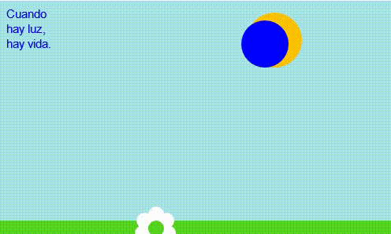Juan Diego Cruz
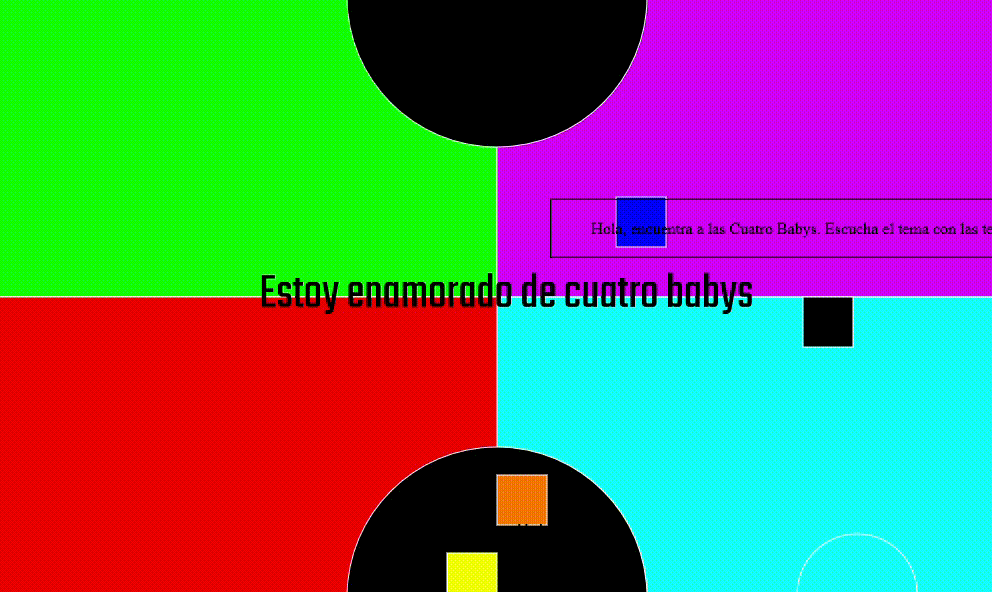Valeria Piña
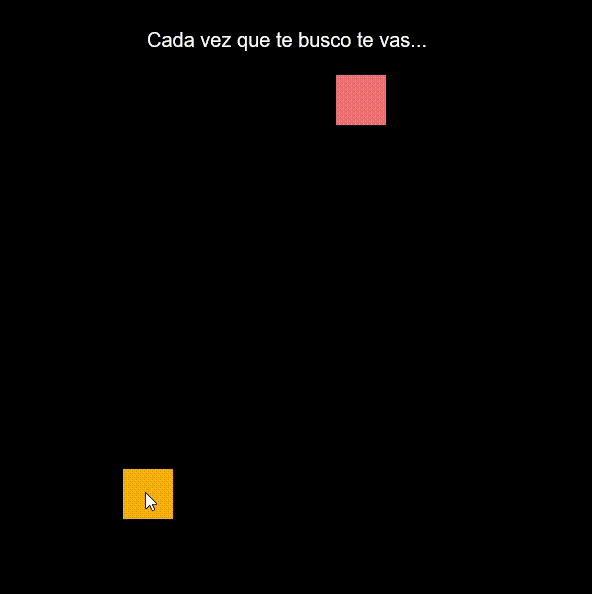Juan Pablo Arango
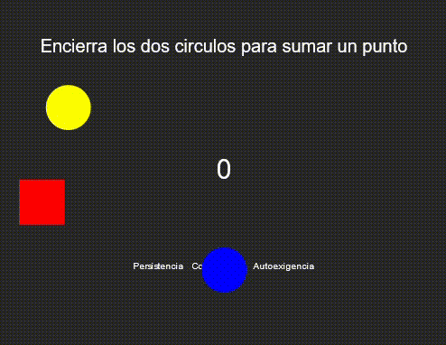Para ver todos los trabajos ingresa al siguiente link: https://pind.netlify.app/
Proyecto libre
Para el proyecto final, realizado en grupos, podían proponer una narrativa interactiva basada en los referentes presentados y en los ejercicios realizados a lo largo del curso. Era un trabajo en el que tenían total libertad creativa.
Simulador de conejos - Santiago Aguirre y Jonathan Nausa
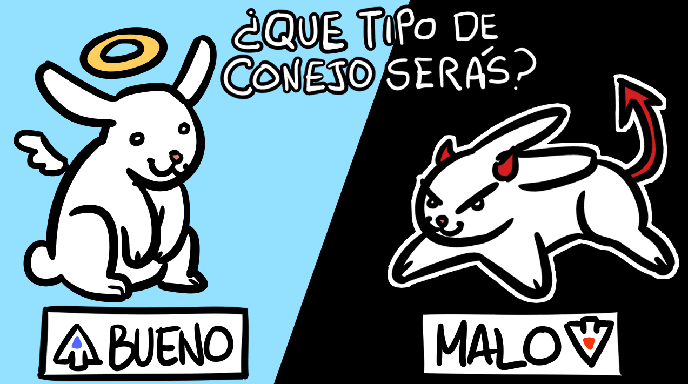Etapas de la vida - Valeria Piña, Juanita Coral y Felipe Medina
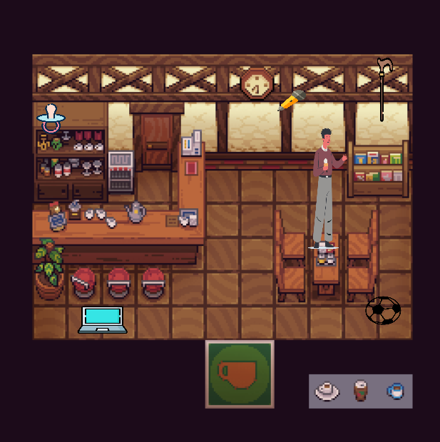Al fin viernes - Juan Diego Cruz, Valentina Nieto y Jhonatan Gómez
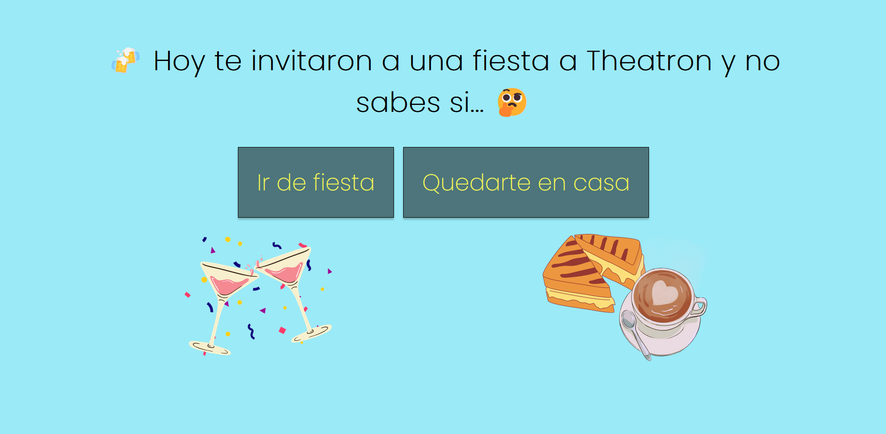Escritorio - Juliana Rodríguez y Ketlly Bautísta
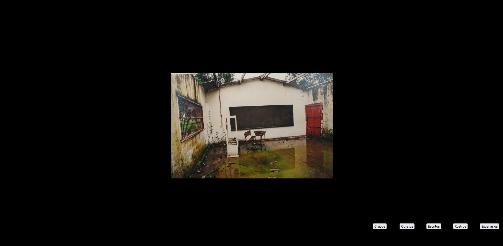Escritorio - Julián Duque, Laura Quintero y Juanita Cubillos (PIN: 625)
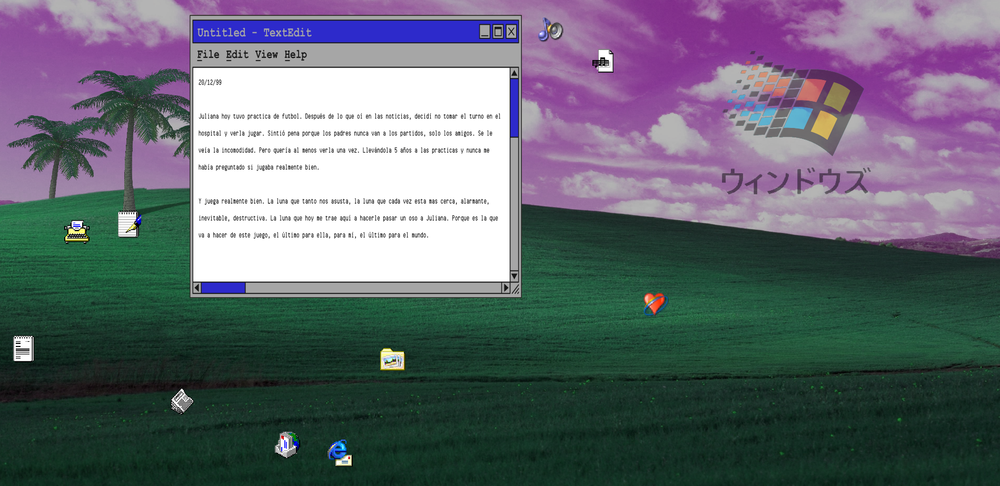Haz clic aquí para conocer más sobre el curso 🔎
Descripción
La realización de narrativas de ficción sonora abarca una serie de herramientas y procesos técnicos y creativos, que pueden ser asumidos como parte de un conjunto de prácticas establecidas históricamente, que orientan y posibilitan la creación de relatos sonoros de una manera estructurada, como es el caso, por ejemplo, de las etapas de preproducción, producción y postproducción, y de los elementos transversales a cualquier narración, como lo son la estructura narrativa, personajes, conflicto, punto de vista, entre otros. Al mismo tiempo, dichos procesos y recursos, pueden ser abordados como oportunidades para experimentar con el lenguaje sonoro, dado que es un campo que se alimenta de otros lenguajes, como el lenguaje escritural y el audiovisual, y se nutre también de los diversos modos de experimentar y trabajar con el sonido en ámbitos como el teatro, la música, el cine y en general, de cualquier práctica artística que tenga como propósito componer, comunicar, evocar o suscitar emociones usando sonidos además de la palabra hablada. Este curso se propone como un espacio para profundizar en el uso de herramientas y ejecución de técnicas propias de la producción de narrativas sonoras, mediante la experimentación con elementos creativos vinculados a la construcción y realización de relatos de ficción, ofreciendo la posibilidad de desempeñar los roles involucrados en el desarrollo de un proyecto de este tipo.
Trabajos de estudiantes
Microrrelato sonoro
Este ejercicio, realizado en parejas, tenía las siguientes indicaciones:
Características del relato
- Un relato de entre uno y cinco minutos de duración.
- Dos personajes tienen una conversación.
- La perspectiva de escucha es la de unx de ellxs, así que podemos escuchar algunos de sus pensamientos.
- Al final un evento repentino interrumpe la conversación y le da un giro al relato.
- Los personajes se acaban de conocer, se conocen de mucho tiempo atrás, tienen una relación cercana o lejana, personal o laboral.
Detonante creativo
- Cada pareja piensa en un objeto y lo escribe en un papelito.
- Cada pareja piensa en un lugar y lo escribe en otro papelito.
- Se revuelven en una bolsa los papelitos de la categoría de objetos y en otra bolsa los papelitos de la categoría lugar.
- Cada pareja toma al azar un papelito de la bolsa de objetos.
- Cada pareja toma al azar un papelito de la bolsa de lugares.
A partir de la palabra y el lugar
- La acción transcurre en el diálogo entre los dos personajes y en el evento inesperado que sucede al final.
- Hay un conflicto o situación (entre los personajes, de uno de los personajes o externo a los personajes) relacionado con ese objeto.
- El microrrelato puede ser de ciencia ficción, drama, comedia o terror.
- Las características de los personajes deben permitir que cada pareja interprete a ambos personajes.
Despertando - Juan Diego Saenz & María José Agudelo
Objeto: Reloj
Lugar: Cabaña
Reencuentro - Mayra Robles & Juan Esteban Pérez
Objeto: Bisturí
Lugar: Cabaña en el bosque
Purgando a Miguel - Jhonatan Gómez & Valeria Huiza
Objeto: Camiseta de CR7
Lugar: Infierno
Entre las uñas - Juan Diego Cruz & Valeria Tafurt
Objeto: Cortauñas
Lugar: Estadio
El regalo - Juan Miguel Manrique & Carlos Polanía
Objeto: Vibrador rosado
Lugar: Parque de atracciones
El monstruo del páramo - Kettly Bautista & Sergio Forero
Objeto: Motocicleta
Lugar: Páramo
Episodio píloto de podcast de ficción
Para el proyecto final, realizado en grupos conformados por cuatro estudiantes, debían plantear un podcast de ficción sonora de temática libre y producir un episodio piloto.
Al Octavo Día, Dios creó el Carnaval - Ana Sofía Jimenez, María Monica Mejía, Sergio Cruz y Daniel Felipe Ortíz
Sinopsis:
Ana, una estudiante de periodismo dedicada completamente a sus estudios, es invitada por Sofía, su amiga, a una fiesta de rave, donde desea liberar su mente de la academia y dejar fluir su sentir. A través de una papeleta de LSD, Ana se conecta con su superyo, su conciencia, con quien tendrá toda una conversación sobre sus memorias, la fiesta, el carnaval, la reencarnación y Maria Antonieta, experimentando alucinaciones y volviendo difusa la línea entre la realidad y la ficción.
El Sueño Dorado - Valeria Tafurt, Juan Diego Cruz, Valeria Huiza & Jhonatan Gómez
Sinopsis:
En medio de una crisis financiera, Ismael Galindo, un comerciante de oro de Bogotá, emprende un viaje a Santa Rosa, un pueblo situado entre las selvas colombianas donde se rumorea que existe un gran tesoro. Lo que inicia como una promesa de fortuna cobra un rumbo inusual cuando la selva reclama lo que le pertenece.
Monteadentro - Kettly Bautísta, Sergio Forero, Juan Esteban López & Juliana Martínez
Sinopsis:
Estefanía, una periodista audaz y exigente consigo misma, busca una gran historia que pueda catapultar su carrera. Ella sale de la capital rumbo a Guapi, un pueblo del pacífico Colombiano abandonado por el estado, siguiendo la historia de supuestos casos de desaparición forzada. Sin embargo, nadie tiene la certeza de qué está sucediendo. Estefanía y Sebastián, su compañero de investigación, se darán cuenta que las desapariciones tienen una razón mucho más grande y totalmente diferente a lo que esperaban encontrar, abriendo paso a un mundo totalmente nuevo.
Matojo, (Ep. 1) Un americano - Paula Narvaez, María Fernanda Contreras, Valeria Piña & Paula Rodríguez
Sinopsis:
Néstor, un joven de 21 años que se acaba de graduar de literatura y sin mucha oportunidad en su camino, comienza su nuevo trabajo en la cafetería "Matojo", una cafetería caracterizada por sus clientes jóvenes, alternativos, extranjeros y siempre fieles. Ha llegado tarde a su primer día y comienza a conocer a sus nuevos compañeros, unos amigables, como Antonio, y otros no tanto, como Laura, y claro que sí, a su jefe Víctor. Con nervios y ciertos tropiezos se dispone a hacer las tareas que le han encargado, pero lo que no espera es que prontamente le quedara muy claro el lema del café "Date un respirito bien cargado", algo que le traerá solo problemas a su nuevo ambiente laboral.

No body, no crime - Tatiana Arias, Isabela Sepúlveda, Danitza Ospina & Charlyn Guevara
Sinopsis:
En un pueblo pequeño Lily una mujer casada se reúne con su mejor amiga Jenny cada martes a almorzar. Un día, Lily le confiesa a Jenny que sospecha que su esposo la engaña, pero a pesar de eso jamás se iría de su lado. Al día siguiente, Jenny se entera que su amiga desapareció misteriosamente. Tras ver que Julián, el esposo de Lily, al poco tiempo se mudó con su amante, sin buscar mucho a su esposa, Jenny no puede evitar sospechar que fue una ficha clave en el crimen de su amiga. A partir de esto, y con el cierre del caso, decide realizar un elaborado plan donde buscará justicia por sus propias manos y matará al marido. Tiempo después, cuando la amante reclama el seguro de vida de Julián todos piensan que fue ella quien lo asesinó y deja invicta a Jenny, al fin vengando a su amiga.
La verdadera historia del Titanic - Felipe Medina, Alan Stevenson, Álvaro Angarita & María Paula Vargas
Sinopsis:
En las cataratas del Niagara, un pescador encuentra un naufrago abrazado a un televisor. Si no fuera por el escuálido cuerpo del naufrago, la tabla que lo sostiene ya se habría hundido. En medio de su locura, el naufrago ha recreado la historia del Titanic.
Haz clic aquí para conocer más sobre el curso 🔎
Descripción
Narrar en la era digital implica en un nivel general hacer uso de plataformas y herramientas de creación y difusión de contenido a través de Internet con el propósito de contar historias. Sin embargo, es mucho más que esto, ya que las posibilidades de creación en Internet son diversas, por un lado, gracias a la materialidad digital —programable, combinable, variable y actualizable— de los medios computacionales, y por otro, a la estructura hipertextual, no lineal, interactiva, algorítmica, navegable y en red que caracteriza a la web. Narrar en/a través de/con/para Internet, de manera crítica y creativa, supone apropiar plataformas y herramientas en su dimensión técnica, conociendo sus posibilidades y limitaciones narrativas. Implica también abordar la creación narrativa desde la convergencia de lenguajes (escrito, sonoro, corporal y audiovisual) y desde la experimentación práctica en torno a paradigmas de creación propios de Internet. Por lo anterior, el curso se propone como un espacio para explorar el lenguaje multimedia en diálogo con prácticas creativas surgidas y consolidadas gracias a Internet, mediante ejercicios de apropiación crítica de plataformas de diseño y publicación de contenido y mediante la escritura y manipulación de código en los lenguajes de programación principales que constituyen la web (HTML, CSS y JS).
Trabajos de estudiantes
Criatura digital
Descripción
Construir una criatura o personaje digital usando HTML y CSS, que cumpla los siguientes parámetros:
- El contenedor debe tener un formato cuadrado y unas dimensiones de 60vw x 60vw.
- Ninguna parte del personaje puede salirse de los límites del contenedor.
- La criatura o personaje debe tener un nombre, el cual debe aparecer en la parte superior usando la etiqueta h1.
- Para el nombre pueden usar una tipografía de GoogleFonts (https://fonts.google.com/).
- Poner el título (<title>) de la página. Esto se hace en el <head> (ver ejemplo).
- Agregar un ícono para que se visualice la pestaña del navegador. Esto se hace en el <head> (ver ejemplo).
Ejemplo
Este fue el ejemplo que usaron como base para modificar: https://glitch.com/edit/#!/el-mezclador-recuadro
Julián Silva
Juan Sebastián Ballesteros
Laura Coral
Julián Delmas
Julián Duque
Barbara Fonseca
Natalia Márquez
Camila Moreno
Ana Sofía Orduz
Julián Rincón
Narrativa ramificada
Este ejercicio, realizado en parejas, tenía como propósito explorar la herramienta Twine para la construcción de relatos hipertextuales, no lineales o ramificados. El ejercicio consistía en expandir un microcuento incluyendo caminos alternativos, combinando texto, imagen y sonido. El punto de partida fue el siguiente:
Microcuento como punto de partida
Observaba con gran interés las edificaciones de Teusaquillo. De repente un bus de esos azules me cubrió la visión. Estaba enfurecida y golpeé fuertemente la ventana llamando la atención de uno de sus pasajeros. Él volvió su cabeza hacia mi y cruzamos la mirada. Sus ojos oscuros se postraron en los míos, penetrando un velo en mi alma. Moví mi cabello tímidamente sin perderlo de vista. Me saludó con la mano y se golpeó torpemente. Lo amé en ese instante. Nos sonreímos con nostalgia al mismo tiempo, el semáforo cambió a verde y los buses tomaron caminos separados, nosotros también. María del Pilar Rodríguez, 22 años. Bogotá en 100 palabras. Los mejores 100 relatos breves (2017, Alcaldía Mayor de Bogotá).
Al terminar el día - Sergio Forero y Sofía Baptiste
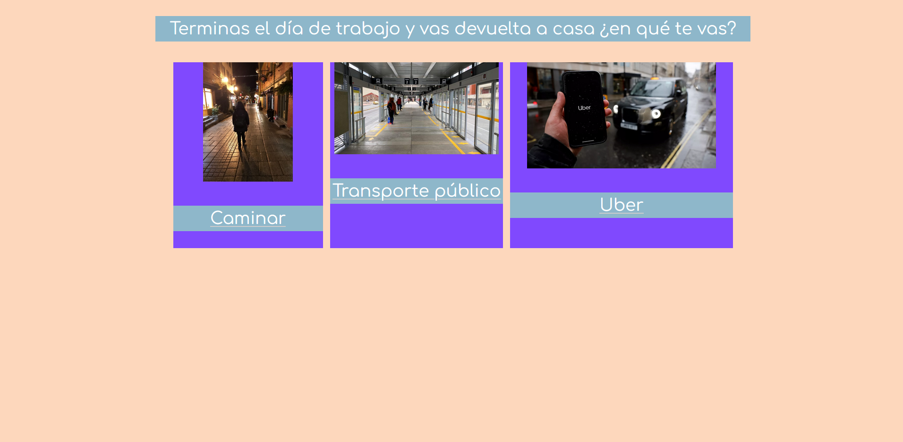Teusaquillo y sus vainas - Paula Romano y Natalia Márquez
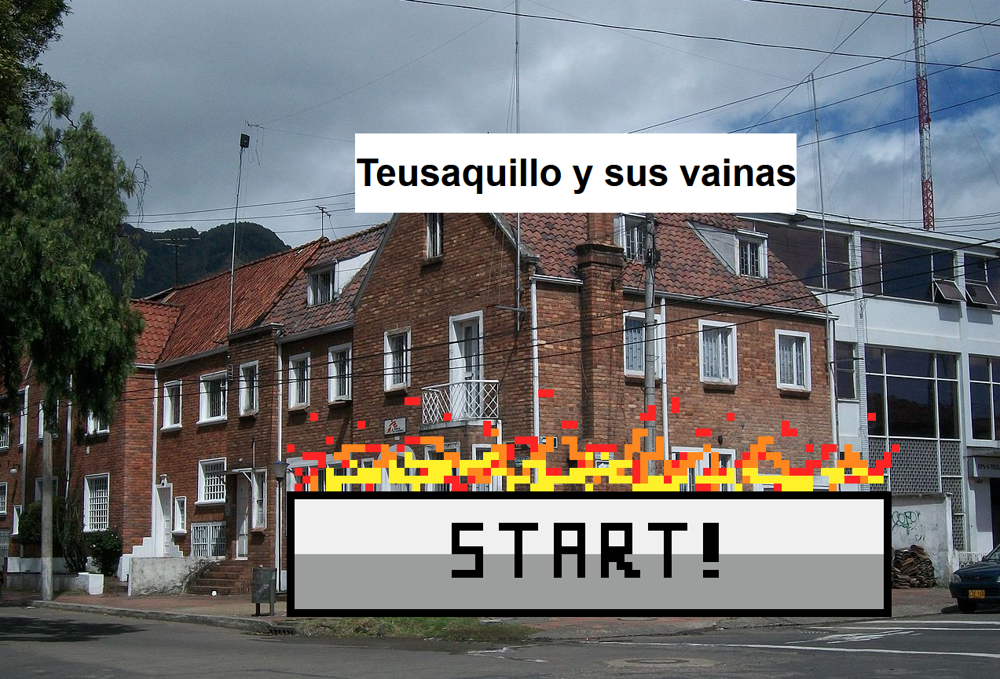Divagar por la mente - Julián Delmas y Sofía Argaez
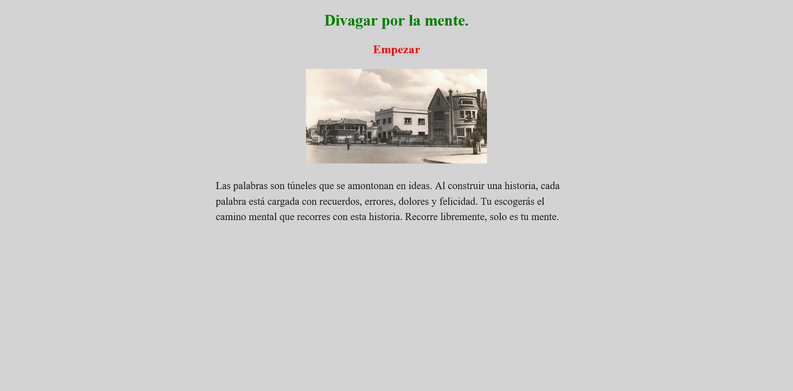Gabinete de curiosidades
Este ejercicio tenía como objetivo explorar las posibilidades narrativas de las ventanas emergentes, siendo uno de los elementos compositivos característicos de las interfaces digitales basadas en la web. Desde un punto de vista técnico permitirá una aproximación a la lógica de programación desde el lenguaje JavaScript (JS) y profundizar en HTML y CSS, y desde un punto de vista conceptual, permitirá reflexionar de manera práctica y creativa en torno a las nociones de simultaneidad y profundidad:
Simultaneidad
Acceso y visibilidad al mismo tiempo de varias imágenes relacionadas con un tema, con una navegación que no es necesariamente lineal.
Profundidad
La idea de ventana como segunda capa de una información más profunda.
Preguntas orientadoras para el proceso creativo
- ¿qué información puede emerger de cada imagen?
- ¿la información en la ventana emergente complementa la imagen del gabinete al cual se vincula?
- ¿la navegación entre imagen y ventana construye un relato en dos momentos?
- ¿el gabinete funciona como una colección de pequeñas historias que construyen una gran historia o mensaje global sobre un tema específico?
- ¿de qué manera la información de la ventana amplía o modifica el sentido inicial de la imagen del gabinete?
- ¿la información de la ventana juega con la sorpresa como estrategia narrativa?
Camila Moreno
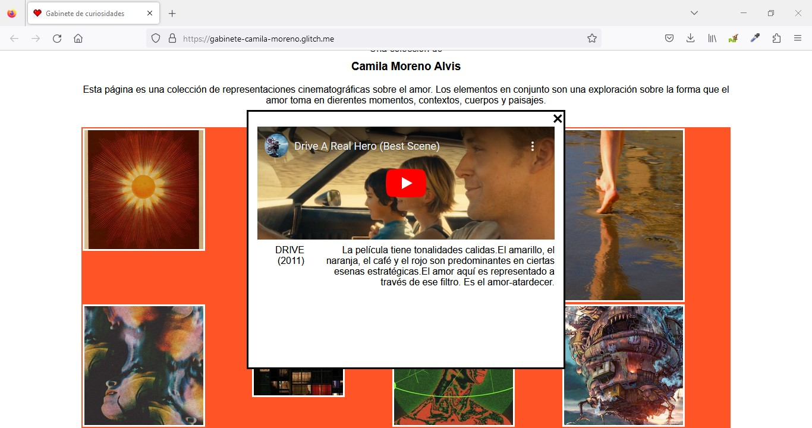Julián Rincón
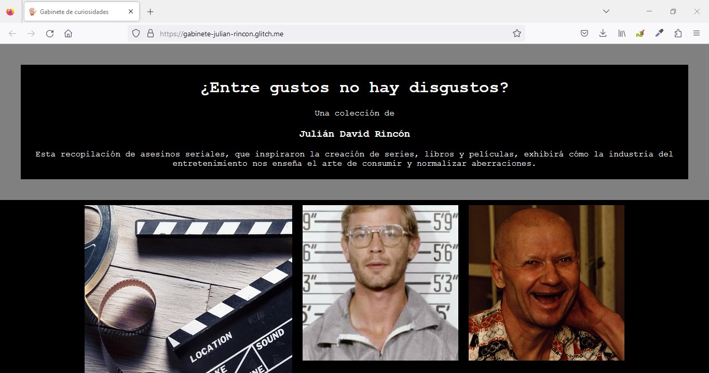Ana Sofía Orduz

Angélica Riascos
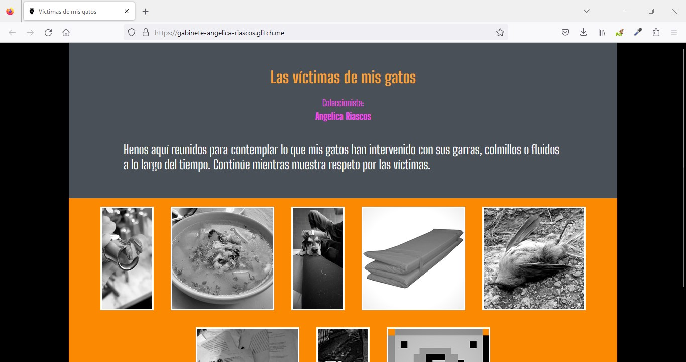Julián Duque

María Paula Charry
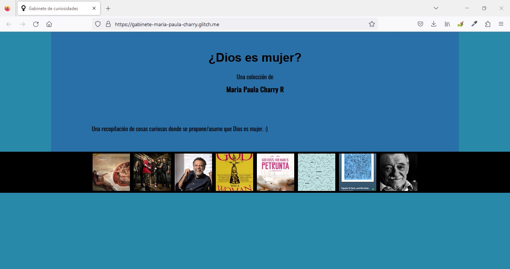(Falso) reportaje/documental multimedia
El proyecto final consistía en realizar un reportaje de ficción en el que exploraran la mezcla de lenguajes para soporte web y técnicas de construcción de verosimilitud. Al mismo tiempo, este proyecto permitía retomar los recursos compositivos y narrativos apropiados en los ejercicios previos.
Los secretos del Hotel Cecil - Sofía Alvarez, Juan José López, José Salamanca & Pablo Toro
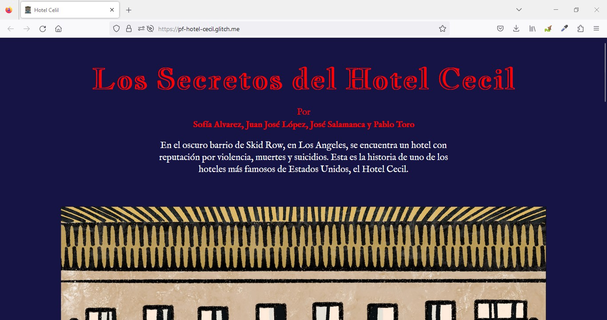El Gorila que decidió romper su silencio - Carlos Polanía, Pablo Porto, Melissa Martelo
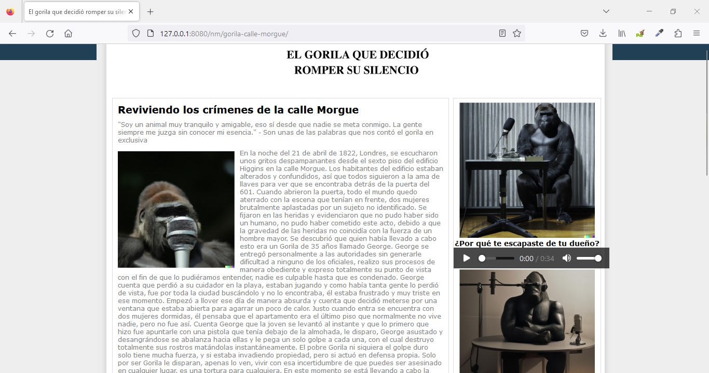Habitar Bogotá - Sofía Argaez, María José Rodríguez & Bárbara Fonseca
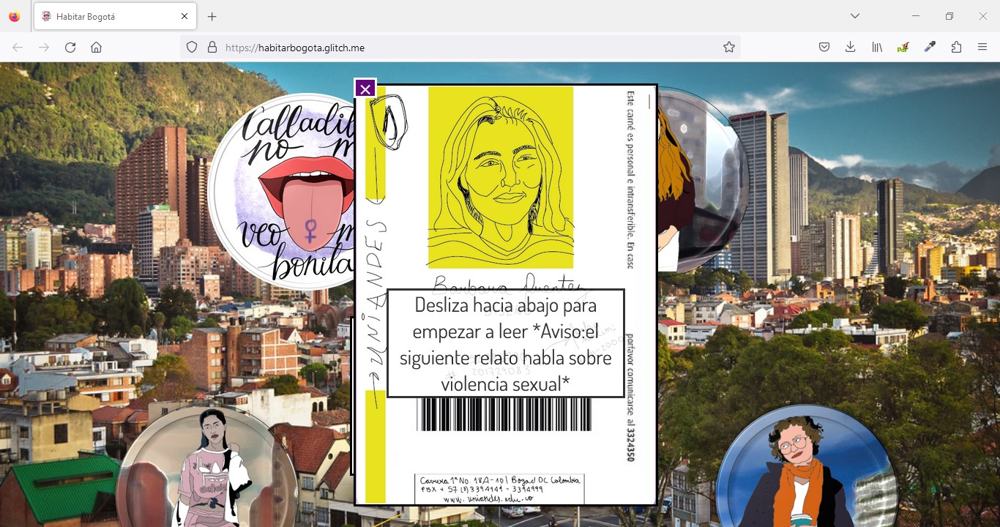Investigación: Los Julianes - Julián Rincón, Julián Silva, Julián Duque & Yael García
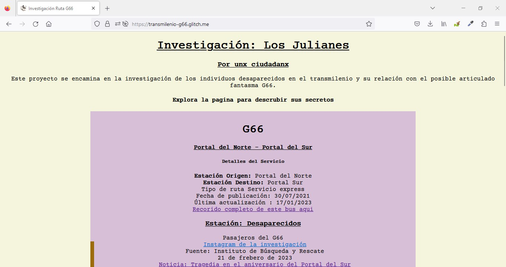Haz clic aquí para conocer más sobre el curso 🔎
Descripción
Los videojuegos ocupan un lugar cada vez más importante en el ecosistema de medios por donde circulan las historias, se configura la cultura y se establecen modos de interactuar socialmente. Aunque es un medio joven en comparación con otros, ha madurado rápidamente junto con la evolución de la tecnología, posicionándose como una de las formas de entretenimiento más inmersivas, y como un medio propicio para la experimentación artística, y para la reelaboración y mezcla de lenguajes, permitiendo a su vez diseñar y experimentar nuevas formas de vivencias narrativas. Los videojuegos han generado un cambio de paradigma, al hacer posible la transición del espectador del siglo XX al jugador del siglo XXI, quien puede asumir un rol activo y protagónico en el desarrollo de un relato. Esto último implica el diseño y construcción de mecanismos de interacción y control entre el jugador y el entorno virtual donde la historia tiene lugar, que permiten que esta última avance. Es por esto por lo que este curso se propone como un espacio para aproximarse de manera práctica al diseño y desarrollo de videojuegos, abarcando herramientas, procesos y componentes que comprenden una producción digital de este tipo, haciendo énfasis en su dimensión narrativa y en las diversas formas posibles de desplegar la historia en relación con las posibilidades de interacción y navegación ofrecidas al jugador.
Trabajos de estudiantes
A continuación se pueden ver videos que muestran el gameplay general de los juegos realizados.
Proyecto final - Demo de videojuego
El alquimista de la luz - Juan Camilo Mera, Juan Miguel Manrique, Valentina Nieto, Sophie Salazar & Julián Delmas.
Haz clic aquí para jugarlo.
Salva a Gaitán - Nathalia Afanador, Ketlly Bautista, Alejandro Paez, Jonathan Nausa & David Parrado.
Échate un motoso - Diana Clavijo, Santiago Posso, Ivanna Ramirez, Juliana Rodríguez & María Paula Vargas.
Haz clic aquí para conocer más sobre el curso 🔎
Descripción
La cultura digital supone un conjunto de procesos subjetivos (del yo), sociales (del colectivo) y culturales (de la expresión y lo simbólico) que surgen como resultado de las transformaciones tecnológicas expresadas en el internet, las redes y las plataformas y que tienen como eje al aparato celular. Así surge una experiencia otra de los reconocimientos del yo y el colectivo y de acceso, comunicación y producción del conocimiento. Este curso de CBU es una invitación a mapear, analizar y pensar críticamente la computación, el Internet y su infraestructura, la Web 2.0, las plataformas y las redes y sus impactos en la vida cotidiana, los modos de socialidad y la cultura popular. Se espera que los estudiantes reflexionen sobre su experiencia de habitar la cultura digital y sus modos de producción de subjetividades, agencias y colectivos.